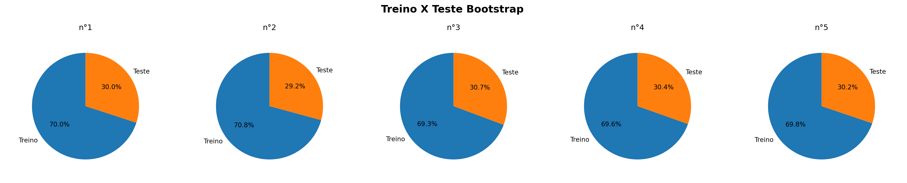
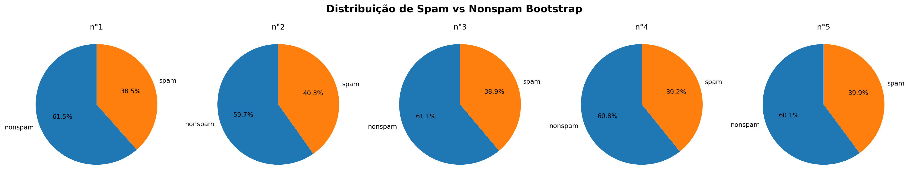

import pandas as pd
import numpy as np
import matplotlib.pyplot as plt
from sklearn.model_selection import StratifiedKFold
from sklearn.model_selection import RepeatedStratifiedKFold
from sklearn.utils import resample
from sklearn.model_selection import cross_val_score
from sklearn.ensemble import RandomForestClassifier
from sklearn.metrics import confusion_matrixValidação Cruzada
Imports
Segue abaixo o código da importação dos módulos que usaremos nesse caderno:
Validação Cruzada
Como exposto no caderno de criação e avaliação de preditores, existem diversos métodos de aprendizado de máquina que podemos usar para construir um preditor. Então como saber qual método é melhor? Quais hiperparâmetros usar? Um jeito de resolver essas questões é utilizar a validação cruzada.
A validação cruzada consiste em simular diferentes cenários de treino/teste afim de reduzir o viés da seleção amostral de um modelo. Ela nos permite comparar diferentes métodos de aprendizado de máquina e hiperparâmetros para avaliar qual funcionará melhor na prática.
Validação Cruzada tem 3 pilares: reamostragem, ajuste de hiperparâmetro e seleção de modelo. Apresentaremos os 3 aqui nesse caderno.
Utilizaremos a base Spam ao longo do caderno.
# trocar essa url pelo caminho da base spam de vocês.
Spam = pd.read_csv("Cadernos Grupo Python\\Validação Cruzada\\spam.csv")
# Separando o rótulo das demais variáveis
XSpam = Spam.loc[:, Spam.columns != "type"]
YSpam = Spam["type"]Reamostragem
Reamostragem é um processo estatístico que consiste em reorganizar ou reutilizar os dados já coletados com o objetivo de analisar a variabilidade dos resultados e avaliar a confiabilidade das conclusões obtidas. Em vez de buscar novos dados no mundo real, a reamostragem trabalha apenas com a amostra original, extraindo dela diferentes combinações de dados por meio de sorteios aleatórios. Isso permite simular diversas situações possíveis e observar como as medidas estatísticas se comportam diante dessas variações. Assim, a reamostragem ajuda a entender melhor o quanto os resultados podem mudar devido ao acaso.
Reamostragem serve para diminuir o viés da separação Treino X Teste de um modelo ao criar várias separações em paralelo. Quando treinamos um modelo com uma base de dados separada em treino e teste sem reamostragem a análise do modelo será verdadeira apenas para aquela separação treino e teste. O preditor pode ser muito bom para aqueles casos teste específico, em uma outra separação ele se provaria menos eficaz possivelmente. Pode haver uma grande discrepancia entre o desempenho nos dados teste e para novos dados quando criamos um modelo com baixa capacidade de generalização, que pode ser acusado com a reamostragem.
Reamostragem é usada durante o ajuste de hiperparâmetros e a seleção de modelos, por reduzir o viés da separação Treino X Teste.
Apresentaremos 3 métodos de reamostragem: K-fold, Repeated K-fold e Bootstrap. Seguiremos com uma definição e exemplo de código de cada um para depois entrar no mérito de como utilizar na validação cruzada.
K-fold
Definição
Este método consiste em fatiar os dados em k pedaços iguais. Utilizamos um pedaço para o teste e os demais para o treino. Então realizamos esse procedimento k vezes, de modo que em cada repetição um novo pedaço seja utilizado para o teste. Para avaliar o erro nós tiramos a média de todos os erros de todas as replicações.
Exemplo: K-fold com 10 partes:

Quanto maior o k escolhido obtemos menos viés, porém mais variância. Em outras palavras, você terá uma estimativa muito precisa do viés entre os valores previstos e os valores verdadeiros, porém altamente variável. Agora quanto menor o k escolhido, mais viés e menos variância. Ou seja, não iremos necessariamente obter uma boa estimativa do viés, mas ela será menos variável.
OBS: Quando o k é igual ao tamanho da amostra, o método é também conhecido como leave-one-out.
Código de exemplo
Vamos utilizar reamostragem por k-fold no conjunto de dados spam utilizando a implementação do scikit-learn. O scikit-learn possui algumas diferentes implementações para a reamostragem por k-folds. Usaremos a função StratifiedKFold porque ela faz a separação de k-folds preservando a proporção original da coluna com os rótulos.
# Criação dos k-folds
kfSpam = StratifiedKFold(n_splits=10, shuffle=True, random_state=11).split(XSpam, YSpam)Parâmetros da função StratifiedKFold():
n_splits: Recebe o número de partições, o padrão é 5.shuffle: SeFalseos dados seguirão a ordem em que aparecem no conjunto de dados, seTrueos dados serão embaralhados. Padrão éFalse.random_state: Semente de aleatoriedade para o embaralhamento. Padrão éNone.
Logo após chamar a função StratifiedKFold() chamamos um método, .split(). Esse método é aplicado em cima do resultado do StratifiedKFold(). Ele recebe os dados da base utilizada e o rótulo para realizar a separação em k-folds. Fizemos a chamada do método desse jeito para encurtar o processo de separação em k-folds, não usaremos o resultado da função StratifiedKFold() para nada sem antes inserir os dados, assim também evitamos ter uma variável interemediária desnecessária.
O resultado da função StratifeidKFold(), assim como qualquer outra implementação de k-folds no scikit-learn é um generator:
# Tipo da variável resultado do StratifiedKFold().split()
print(type(kfSpam))<class 'generator'>Eles são um tipo especial de vetor, possuindo um comportamento diferente de uma lista, notavelmente ele só pode ser iterado uma vez que para o scikit-learn é o ideal em termos de eficiência computacional. Vamos criar uma lista a partir desse generator apenas para poder entender como o scikit-learn fez a divisão, mas usaremos sempre a variável gerada a partir da chamada do método .split() em cima do resultado da função StratifiedKFold().
# criação de uma lista para reutilização do generator
kfSpamLista = list(kfSpam)
# Exibindo cada k-fold
for K, (train, test) in enumerate(kfSpamLista, 1):
print("K:", K)
print("Treino:", train)
print("Teste:", test)
print(f"len(train): {len(train)}\nlen(test): {len(test)}\n\n")
if K == 3:
breakK, train e test são gerada a partir de kfSpamLista através da função enumerate, um jeito de lidar com a lista gerada a partir do gerador, e são prontamente iterados. O foco dessa explicação é entender como os k-folds funcionam, entender o enumerate e o generator é secundário, não iremos abordar isso futaramente porque são detalhes muito específicos do python que não é importante para entender validação cruzada.
Restringi para exibir apenas 3 k-folds para ficar melhor formatado aqui no caderno. Caso seja do interesse de vocês visualizar o exemplo com todos os k-folds, apenas retire a condição if K == 3: e o break do loop.
No computador de vocês poderá aparecer mais elementos nas listas, formatei para mostrar os 3 primeiros e os 3 últimos apenas para fim explicativo.
Analisando o resultado inteiro com todos os k-folds chegamos a algumas observações importantes:
- a lista treino e teste de cada fold são complementares
- a união entre lista treino e teste de cada fold tem como resultado os índices da base original.
- índices na lista de teste não se repetem em outras listas de teste
- todos os índices passam uma vez pelo conjunto teste de um k-fold
- os índices para treino se repetem K-1 vezes em diferentes folds
Repeated K-fold
O repeated k-fold se resume a repetir o método k-fold várias vezes, com o objetivo de melhorar nossa reamostragem.
Código de exemplo
Vamos aplicar um método de treino 3 vezes em 10 folds. Para isso, utilizamos a função RepeatedStratifiedKFold(). Ela funciona semelhante ao StratifiedKFold(), porém com um argumento a mais: n_repeats, devemos inserir aqui o número de repetições que desejamos fazer.
repeatedKfSpam = RepeatedStratifiedKFold(n_splits=10, n_repeats=3, random_state=11).split(XSpam, YSpam)
print(len(list(repeatedKfSpam)))30Repare que o tamanho da lista gerada é justamente o número de folds vezes o número de repetições, nesse caso 30.
Observações:
- a lista treino e teste de cada fold K são complementares
- a união entre lista treino e teste de cada fold K é tem como resultado os índices da base original.
- índices na lista de teste podem se repetir em outras listas de teste
- todos os índices passam n_repeats vezes pelo conjunto teste de algum k-fold
- os índices para treino se repetem (K-1) * n_repeats vezes em diferentes k-folds
Comparando Repeated K-fold com K-fold tradicional:
Uma vantagem do repeated k-fold em relação ao k-fold é que ele permite que um elemento na lista passe mais de uma vez pelo conjunto teste, o número inserido em n_repeats.
Uma limitação do repeated k-fold em relação ao k-fold é que, até o dia 04/06/2025, a implementação no scikitlearn, a função RepeatedStratifiedKFold(), não possui o argumento shuffle que o StratifiedKFold() possui. Ele por dentro roda a função StratifiedKFold() com o argumento shuffle em True, logo, se por alguma razão quisermos os dados não embaralhados, não devemos usar essa função e criar uma função como essa manualmente ou usar outro método de reamostragem.
Bootstrap
O bootstrap é uma técnica de reamostragem com o propósito de realizar amostragem dos dados de treino com repetições. Consiste em realizar amostragens com reposição a partir da amostra original. Quando fazemos amostragem com reposição, podemos repetir uma amostra e como consequência disso, cada amostra selecionada é independente das amostras que vieram antes dela.
Quando fazemos amostragem sem reposição, não estamos recolocando os valores, uma vez que um valor é selecionado, ele não pode ser selecionado novamente, portanto não geram resultados independetes já que o valor obtido em uma amostra afeta a possibilidade dos valores da próxima amostra.
Um ponto negativo do Bootstrap é que, ao realizar a reamostragem, a estratificação pode ficar um pouco diferente que a original. Em Spam por exemplo, 1813 amostras são classificadas como “spam” e 2788 são classificados como “nonspam”, uma proporção de 0.394 para spam e 0.606 para nonspam. Como o Bootstrap faz a reamostragem independente com reposição, essa proporção será alterada, o que pode aumentar o viés para um dos lados involuntariamente, que é especialmente danoso para bases de dados com poucas amostras.
Podemos escolher um tamanho de amostras maior ou menor do que o vetor de entrada. Podemos fazer oversampling ou undersampling para corrigir o desbalanceamento da classe majoritária se julgarmos necessário. Falaremos mais sobre como lidar com o desbalanceamento da classe majoritária no futuro, por hora apenas é importante saber que podemos aumentar ou diminuir as amostras com bootstrap.
Bootstrap seleciona amostras aleatoriamente na base sem se importar que elas se repetiam. Como consequênia, isso gera uma proporção de amostras que não foram selecionadas, que chamamos de proporção out-of-bag (OOB), justamente as que serão utilizadas como teste.
É possível calcular a chance de uma amostra específica entrar na reamostragem por Bootstrap. Esse cálculo é baseado na distribuição binomial.
Fórmula da PMF da distribuição binomial:
\(P(X = k) = \binom{n}{k} p^k (1 - p)^{n - k}\)
No caso k=0 (não ser escolhido pelo Bootstrap):
\(P(X = 0) = \binom{n}{0} p^0 (1 - p)^n = 1 \cdot 1 \cdot (1 - p)^n = (1 - p)^n\)
Ou seja,
\(P(X = 0) = (1 - p)^n\)
Como todos os itens têm a mesma probabilidade de serem escolhidos, a probabilidade de que um item específico seja escolhido em um único sorteio é
\(p = \frac{1}{n}\)
Logo, a probabilidade que um elemento específico seja escolhido pela reamostragem por Bootstrap é:
\(P_{escolhido} = 1 - (1 - \frac{1}{n_a})^{n_s}\)
Sendo:
\(n_a\): número total de amostras na base de dados
\(n_s\): número total de sorteios realizados, ou seja, número total de amostras que queremos ter a apartir da reamostragem por Bootstrap.
\(n_s\) pode ser entendido também como \(n_a\) * proporção de reamostragem. No caso do tamanho do resultado desejado da reamostragem ser igual ao número de amostras da base de dados original \(n_s\) = \(n_a\).
Também é possível calcular uma estimativa da proporção OOB a partir da quantidade de amostras escolhidas em relação ao todo.
Digamos que \(I_i\) é 1 se a amostra i não foi selecionada pelo Bootstrap, 0 caso o contrário. A proporção OOB é:
\(\text{Proporção OOB} = \frac{1}{n} \sum_{i=1}^n I_i\)
Pela linearidade da esperança:
\(\mathbb{E}\left[\frac{1}{n} \sum_{i=1}^n I_i\right] = \frac{1}{n} \sum_{i=1}^n \mathbb{E}[I_i]\)
Já vimos como calcular a probabilidade de numa amostra ter sido selecionada pelo Bootstrap. Seu corolário, ou seja, a probabilidade de uma amostra não ter sido selecionada pelo Bootstrap é:
\(\mathbb{E}[I_i] = P(I_i = 1) = P(\text{amostra i não foi selecionada}) = (1 - \frac{1}{n_a})^{n_s}\)
Como os sorteios são simétricos e independentes, todos os \(I_i\) têm a mesma esperança. Logo podemos calcular a proporção OOB:
\(\mathbb{E}[Proporção\:OOB]=\frac{1}{n}\cdot n\:\cdot (1 - \frac{1}{n_a})^{n_s} = (1 - \frac{1}{n_a})^{n_s}\)
Ou simplemente:
\(\mathbb{E}[Proporção\:OOB]= (1 - \frac{1}{n_a})^{n_s}\)
A fórmula ser a mesma não é coincidência.
Mudando \(n_s\) para \(n_a\) * proporção de reamostragem (que vimos ser equivalente). Para um grande \(n_a\) temos:
\(\left(1 - \frac{1}{n_a}\right)^{\text{proporção de reamostragem} \cdot n_a} \approx e^{-proporção\:de\:reamostragem}\)
Lembrando:
\(\lim_{n \to \infty} \left(1 - \frac{1}{n}\right)^n = e^{-1}\)
Logo uma boa estimativa para a proporção OOB é simplesmente:
\(\mathbb{E}[Proporção\:OOB]= e^{-\text{proporção de reamostragem}}\)
Essa estimativa é mais precisa quanto maior for o número de amostras.
A estimativa não necessariamente é verdadeira, como os sorteios são feitos independentemente, existe sempre uma pequena chance de todas as amostras serem escolhidas, assim como apenas uma amostra ser escolhida todas as vezes. Essa estimativa é verdadeira em média, por isso realizamos o Bootstrap várias vezes sequência.
Saber calcular uma estimativa para a proporçao OOB de uma reamostragem por Bootstrap nos dá um recurso muito bom: poder manipular a proporção treino/teste em relação as amostras da base original. Se quisermos que a proporção treino/teste seja 70/30, por exemplo, precisaremos que a relação “amostras selecionadas pelo Bootstrap” / OOB seja 70/30. Como dito, é impossível assegurar que isso aconteça para uma reamostragem específica, portanto fazemos o Bootstrap inúmeras vezes para essa relação em média ser verdadeira.
Segue abaixo uma tabela com a proporção de reamostragem, a estimativa para a proporção OOB (proporção de amostras para teste) respectiva e a proporção in-bag (oposto da OOB, proporção de amostras para treino) respectiva:
| Proporção de reamostragem | Proporção OOB (aprox) | Proporção in-bag (aprox) |
|---|---|---|
| 50.0% | 60.7% | 39.3% |
| 100.0% | 36.8% | 63.2% |
| 120.4% | 30.0% | 70.0% |
| 150.0% | 22.3% | 77.7% |
| 200.0% | 13.5% | 86.5% |
Podemos manipular a proporção de reamostragem para obter a proporção treino teste como desejamos.
Código de exemplo
O scikitlearn possui uma implementação do Bootstrap quando usamos a função resample() com replace = True. Segue abaixo um exemplo de uso:
propReamostragem = 1.204
n_samples = int(YSpam.shape[0]*propReamostragem)
BootstrapSpam = resample(XSpam, YSpam, n_samples=n_samples, random_state=11, replace=True, stratify=YSpam)- Primeiro argumento posicional recebe as variáveis explicativas, nesse caso, XSpam
- Segundo argumento posicional recebe a variável resposta, nesse caso, YSpam
n_samplesrecebe o número de amostras que queremos, número de amostras vezes 1.204 implica numa proporção treino/teste de 70/30 em média em relação a base original.random_staterecebe a semente de aleatoriedade.replacese True, permitirá reposição de amostras, se False, não. É essa variável em True que implementa o método Bootstrap. Se False e n_samples maior que número de amostras originais, um erro será gerado.stratifyrecebe a variável resposta ou None. Se for None, não será feito estratificação e portanto, não haverá garantia da manutenção da proporção da variável resposta.
O stratify vai contra o príncipio do Bootstrap. Ele envieza o sorteio para preservar a proporção entre as classes da variável resposta. Outro problema de usar o stratify é que com ele aquelas fórmulas de estimativa da presença de um valor específico ser selecionado e a estimativa da proporção OOB não funcionarão mais, já que a independência dos sorteios é quebrada. É importante falar sobre ele porque é um bom recurso para se ter se quisermos muito manter a proporção. Daqui para frente não usaremos o stratify para o Bootstrap.
O cálculo do n_samples está fora da função para ter uma visualização melhor, mas poderia ter sido feito diretamente na hora de chamar a função resample.
A função gerou uma lista com dois vetores dentro: [vetorVariaveisExplicativas, vetorVariavelResposta] para utilizarmos posteriormente. A função resample() faz o embaralhamento dos dados automaticamente por padrão.
Segue abaixo um print do resultado da função resample, apenas do vetor da variável resposta para facilitar a visualização:
print(BootstrapSpam[1])1328 spam
1401 spam
1959 nonspam
1497 spam
1815 nonspam
...
2019 nonspam
3911 nonspam
3765 nonspam
3623 nonspam
4170 nonspam
Name: type, Length: 5539, dtype: objectComo Spam possui um número muito alto de amostras e o embaralhemnto é sempre feito, visualizar o Bootstrap em ação pode não ser tão fácil. Para facilitar o entendimento, vamos usar um exemplo mais simples: supomos que temos 10 indivíduos, numerados de 1 a 10. Ao realizar 3 bootstraps do mesmo tamanho da amostra obtemos:
B1 = [1, 1, 1, 2, 4, 6, 6, 7, 8, 10]
B2 = [1, 1, 2, 2, 3, 5, 7, 7, 8, 9]
B3 = [3, 4, 4, 5, 6, 6, 6, 8, 8, 8]Precisamos fazer o Bootstrap diversas vezes para melhorar o resultado da validação cruzada. O scikit-learn não possui uma função RepeatedResample() equivalente a função RepeatedStratifiedKFold() em relação a StratifiedKFold(). Podemos facilmente implementá-la usando um laço for. Segue abaixo uma implementação do RepeatedResample() e uma execução com n_repeats=5.
def RepeatedResample(X, Y, n_samples=None, random_state=None, replace=True, stratify=None, n_repeats=1):
"""X, Y, n_samples=None, random_state=None, replace=True, stratify=None, n_repeats=1"""
ResultadosBootstrap = []
for i in range(n_repeats):
ResultadosBootstrap.append(resample(X, Y, n_samples=n_samples, random_state=random_state, replace=replace, stratify=stratify))
#iterando random_state para gerar reamostragens semi-aleatorias diferentemente
random_state += 1
return ResultadosBootstrap
#RepeatedBootstrapSpam = RepeatedResample(XSpam, YSpam, n_samples=n_samples, random_state=11, replace=True, stratify=YSpam, n_repeats=5)
RepeatedBootstrapSpam = RepeatedResample(XSpam, YSpam, n_samples=n_samples, random_state=11, replace=True, n_repeats=5)A função foi criada com a possibilidade de manter ou não a estratificação original, mas como dito anteriormente, não usaremos esse recurso daqui pra frente.
Vamos agora verificar se a relação treino/teste está próxima de 70/30 como originalmente planejado. Vamos checar a estratificação de cada reamostragem também.
Primeiro a relação treino/teste:
fig, axes = plt.subplots(1, 5, figsize=(20, 4))
fig.subplots_adjust(wspace=0.3)
fig.suptitle('Treino X Teste Bootstrap', fontsize=16, fontweight='bold')
for i in range(len(RepeatedBootstrapSpam)):
#Removendo as duplicatas
BootstrapSemDup = list(set(list(RepeatedBootstrapSpam[i][1].index)))
BootstrapETeste = [len(BootstrapSemDup), YSpam.shape[0] - len(BootstrapSemDup)]
print(BootstrapETeste)
axes[i].pie(
BootstrapETeste,
labels=['Treino', 'Teste'],
autopct='%1.1f%%',
startangle=90,
textprops={'fontsize': 10}
)
axes[i].axis('equal')
axes[i].set_title(f'n°{i+1}', fontsize=12)
plt.tight_layout()
plt.show()[3219, 1382]
[3256, 1345]
[3188, 1413]
[3200, 1401]
[3211, 1390]
Como podemos ver, a relação Treino X Teste em relação a base original está em torno de 70 / 30 como desejado.
Agora a estratificação:
"""for i in range(len(RepeatedBootstrapSpam)):
contagem = RepeatedBootstrapSpam[i][1].value_counts()
plt.figure(figsize=(6, 6))
plt.pie(contagem.values, labels=contagem.index, autopct='%1.1f%%', startangle=140)
plt.title(f'Distribuição de Spam vs Nonspam Bootstrap n°{i+1}')
plt.axis('equal') # Para manter o formato circular
plt.tight_layout()
#plt.show()
"""
fig, axes = plt.subplots(1, 5, figsize=(20, 4))
fig.subplots_adjust(wspace=0.3)
fig.suptitle('Distribuição de Spam vs Nonspam Bootstrap', fontsize=16, fontweight='bold')
for i in range(len(RepeatedBootstrapSpam)):
contagem = RepeatedBootstrapSpam[i][1].value_counts()
axes[i].pie(
contagem.values,
labels=contagem.index,
autopct='%1.1f%%',
startangle=90,
textprops={'fontsize': 10}
)
axes[i].axis('equal')
axes[i].set_title(f'n°{i+1}', fontsize=12)
plt.tight_layout()
plt.show()
Como optamos por manter o Bootstrap totalmente independente, a proporção original da base, 60.6% para spam e 39.4% para nonspam, não é preservada, o que não é um problema para bases com muitas amostras como Spam mas que pode causar problemas em bases pequenas.
Questionamentos comuns
Agora que vimos diferentes métodos de reamostragem, algumas perguntas podem surgir:
Fizemos as reamostragens mas como vamos usá-las para fazer validação cruzada e criar modelos? Como que vamos criar preditores confiáveis e com boa capacidade de generalização a partir da reamostragem? Qual reamostragem devo usar? Posso usar mais de uma reamostragem?
Validação cruzada consiste em simular diferentes cenários de treino/teste para dar uma estimativa mais realista do desempenho de um modelo, é justamente o que estamos fazendo ao treinar preditores com reamostragem. O processo de criação de preditores é parecida entre os diferentes métodos de reamostragem. Falaremos disso aqui nos próximos parágrafos.
Reamostragem serve para aproximar o desempenho do modelo nos testes do desempenho em uso real, isso é, criar modelos confiáveis. Ter boa capacidade de generalização é um problema que será resolvido com ajuste de hiperparâmetro e selecionando o melhor algoritmo de aprendizado de máquinas para o problema específico.
Cada algoritmo de aprendizado de máquina e cada problema tem sua preferência. A seleção de qual reamostragem usar para ter uma melhor análise para determinado problema usando um determinado algoritmo de aprendizado de máquina é um processo ad-hoc, isto é, para cada situação uma solução específica, logo, quase sempre será um chute. Ainda sim, por conta das características de cada método de aprendizado de máquina podemos inferir provaveis situações de melhor uso de um em relação ao outro. O random forest, por exemplo, usa o bootstrap por padrão em sua implementação. O tempo que cada um gasta é algo a ser considerado também. K-Fold é o mais rápido, seguido do Bootstrap e por último o repeated k-fold.
Podemos comparar os resultados entre mais de um método de reamostragem, porém é um pouco redundante, não irá melhorar significativamente o processo de criação de um modelo. Além disso, pensando em custo computacional pode não ser a melhor ideia. Portanto, usar mais de um método de reamostragem para a validação cruzada é contra produtivo.
Criando e comparando preditores com os métodos de reamostragem.
Como respondido anteriormente, o processo de criação de preditores é parecida entre os diferentes métodos de reamostragem.
Em ambientes diferentes do scikit-learn, como no pacote caret do R, o processo de criação de preditores a partir de uma reamostragem é o mesmo, porque no caret tanto a seleção de algoritmo como a reamostragem é um argumento da função que treina o modelo, simplificando o trabalho.
Aqui no scikit-learn como as funções de de treinamento de modelo e reamostragem são independentes entre si e não existe uma função central para criar todos os modelos como no caret, podem haver pequenas diferenças. Nos K-Folds um generator é produzido enquanto no Bootstrap uma lista com dois vetores numpy é produzida.
Porque é desse jeito no scikit-learn? Possivelmente a implementação das funções de K-Fold e Repeated K-Fold foram feitas por um programador diferente da função resample() que usamos para o Bootstrap. Outra explicação possível é que foram feitas em tempos diferentes quando generator ou o numpy não existiam por exemplo. A razão dessa diferença em si não importa muito, mas é um problema do scikit-learn para aprendizado de máquinas a ser contornado.
Feito a reamostragem por K-Fold, independente do tipo, usaremos uma função pronta do scikit-learn: cross_val_score().
kfSpam = StratifiedKFold(n_splits=10, shuffle=True, random_state=11)
#podemos usar a função com o repeated k-fold também
#repeatedKfSpam = RepeatedStratifiedKFold(n_splits=10, n_repeats=3, random_state=11)
resultadoVC = cross_val_score(RandomForestClassifier(), XSpam, YSpam, cv=kfSpam, scoring="accuracy")
print(resultadoVC)
print("Média:", resultadoVC.mean())
print("Desvio padrão:", resultadoVC.std())[0.94360087 0.94565217 0.9673913 0.95434783 0.94782609 0.93695652
0.9673913 0.97391304 0.95869565 0.95217391]
Média: 0.9547948693765917
Desvio padrão: 0.011317223265379938estimator(primeiro argumento posicional): recebe a função que gera o preditor que queremos usar.
cv: recebe o objeto gerado por uma função K-Fold ou repeated K-Fold.scoring: recebe uma métrica, padrão accuracy, pesquisar na documentação do scikit-learn outras métricas possíveis
3 prints são realizados após executar a função: o primeiro para mostrar a acurácia individual de cada modelo gerado por cada fold, o segundo e o terceiro para mostrar a média e o desvio padrão dos folds respectivamente. Podemos tirar algumas conclusões a respeito do RandomForestClassifier() para o problema dos spams, média de acurácia bem alta e desvio padrão bem baixo, é provavelmente um bom algoritmo para o problema dos spams, em todos os folds superior a regressão logística que fizemos no caderno Criação e Avaliação de Preditores.
Essa função tem alguns problemas:
Só funciona para objetos gerados por funções de K-Fold, não aceita outras reamostragens como Bootstrap.
Pra cada métrica que queremos ver precisamos rodar ela novamente. O scikit-learn possui a função
cross_validate()que supostamente deveria funcionar parecido mas que permite uma lista de métricas, porém, tanto na função cross_validate() quanto na cross_val_score() quando colocamos recall a função retorna um erro.Não podemos definir um random_state para o modelo que entra, logo não conseguiremos reproduzir um resultado.
Geramos os modelos sem guardá-los em variaveis, então eles são gerados apenas para criar essas métricas e serão perdidos
No geral, essas funções prontas de validação cruzada sempre possuem alguma limitação, independente da linguagem ou pacote. Idealmente faremos validação cruzada criando nossas próprias funções para customizar o máximo possível. Isso exige um bom domínio de python e da teoria por trás do aprendizado de máquinas. Mas é um processo necessário para fugir dos problemas relatados a cima.
Segue abaixo uma função criada para exibir acurácia, sensibilidade e especificidade de um modelo recebendo o número de folds para a reamostragem por k-fold, o random_state e a função de implementação de algoritmo de aprendizado de máquina:
def testeMetricasKFold(XBase, YBase, n_splits, random_state, funcaoAlgoritmo):
"""Função para testar acurácia, sensibilidade e especificidade de uma dada base passando por reamostragem por k-fold usando o algoritmo inserido"""
# criação de uma lista para reutilização do generator
kfBase = StratifiedKFold(n_splits=n_splits, shuffle=True, random_state=random_state).split(XBase, YBase)
kfBaseLista = list(kfBase)
# Salvando apenas os índices dos folds em listas [[[treino], [teste]], [[treino], [teste]], ...]
foldsBase = []
for K, (train, test) in enumerate(kfBaseLista, 1):
# Não guarda K porque não precisa, é o índice da lista mais 1.
foldsBase.append([list(train), list(test)])
#print("K:", K, "train:", len(train), "test:", len(test))
# Criando os modelos individuais de cada fold
modelosIndividuais = []
for fold in foldsBase:
modelosIndividuais.append(funcaoAlgoritmo(random_state=random_state).fit(XBase.iloc[fold[0]], YBase.iloc[fold[0]]))
# Testando os modelos individuais de cada fold
acuraciaModelos = []
sensibilidadeModelos = []
especificidadeModelos = []
for i in range(len(modelosIndividuais)):
Y_predBase = modelosIndividuais[i].predict(XBase.iloc[foldsBase[i][1]])
vn, fp, fn, vp = confusion_matrix(YBase.iloc[foldsBase[i][1]], Y_predBase).ravel()
acuracia = (vp + vn) / (vp + vn + fp + fn)
sensibilidade = vp / (vp + fn)
especificidade = vn / (vn + fp)
acuraciaModelos.append(acuracia)
sensibilidadeModelos.append(sensibilidade)
especificidadeModelos.append(especificidade)
# Printando o compilado de métricas
print(f"Média da acurácia: {(sum(acuraciaModelos)/len(acuraciaModelos)*100):.1f}%")
print(f"Desvio padrão populacional da acurácia: {np.std(acuraciaModelos, ddof=0):.3f}\n")
print(f"Média da sensibilidade: {(sum(sensibilidadeModelos)/len(sensibilidadeModelos)*100):.1f}%")
print(f"Desvio padrão populacional da sensibilidade: {np.std(sensibilidadeModelos, ddof=0):.3f}\n")
print(f"Média da especificidade: {(sum(especificidadeModelos)/len(especificidadeModelos)*100):.1f}%")
print(f"Desvio padrão populacional da especificidade: {np.std(especificidadeModelos, ddof=0):.3f}\n")E agora utilizando-a para a base Spam com 5 folds e com o RandomForestClassifier:
testeMetricasKFold(XSpam, YSpam, n_splits=5, random_state=11, funcaoAlgoritmo=RandomForestClassifier)Média da acurácia: 95.1%
Desvio padrão populacional da acurácia: 0.010
Média da sensibilidade: 92.4%
Desvio padrão populacional da sensibilidade: 0.014
Média da especificidade: 96.8%
Desvio padrão populacional da especificidade: 0.008
Ajuste de Hiperparâmetros
Seleção de Modelos
“An Introduction to the Bootstrap” – Efron & Tibshirani (1993)